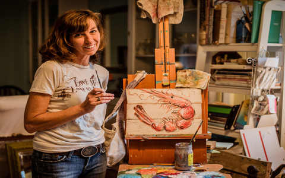

About Artist
Born and raised in the South Carolina Lowcountry, Beth portrays conventional, local images upon the unconventional surfaces of salvaged and repurposed materials. She thrives on combining the unexpected use of ordinary objects with the natural beauty of local scenery and wildlife. Beth began her formal training in the field of art at the College of Charleston in 1982. She went on to study at Winthrop College with concentrations in painting and pottery. She spent a year on exchange at Bowling Green State University in Bowling Green, Ohio, where she experimented in such diverse areas as glass blowing, enameling, gallery installation, and art therapy. She received a BA in Psychology with a minor in Fine Arts. Beth’s love of diverse surfaces has been evident over the years. These unusual “canvases” have included interior and exterior walls, floors, fabric, glass, metal, clay, and furniture. Her creations have received awards such as Best Children’s Room 1996 in the Mount Pleasant Parade of Homes, 2nd Place Best Display 2013 Summerville Flowertown Festival, and the 2014 Mayor Joseph P. Riley Certified Authentic Made in Charleston Award. Beth has also been chosen as an Exhibiting artist in the 2014 Mt Pleasant Office of the Mayor Art Program and as a Participating artist in the West Of ChART Box Project. In addition, she is a member of the Charleston Artist Guild and contributes a portion of the proceeds from her art to Charleston’s YoArt organization. She lives, paints, scavenges for surfaces, and generally enjoys life in a coastal town outside of Charleston, SC with her very helpful Hubby, 4 daughters, 4 felines, and one very energetic pup!
